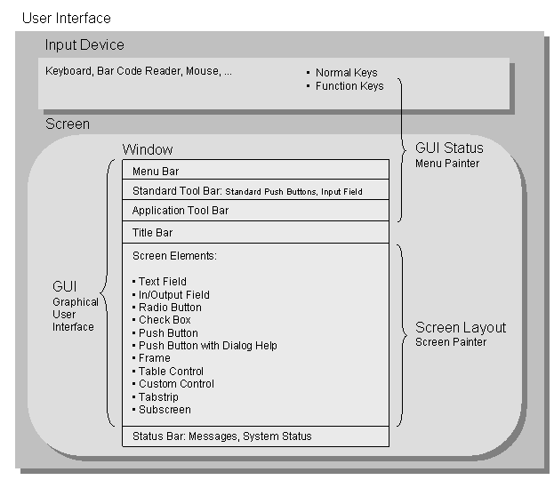

SAP NetWeaver AS ABAP Release 751, ©Copyright 2017 SAP AG. All rights reserved.
ABAP - Keyword Documentation → ABAP - Reference → User Dialogs → Dynpros →User Interface
For the execution of user dialogs, input and output services are required that can be accessed through a user interface (UI). A user interface is used for the interaction between a user and a program. If parts of the user interface are displayed in the GUI window on the screen, this is a graphical user interface (GUI). The SAP-specific implementation for the execution of dialog-based applications with dynpros is SAP GUI, which is installed as a software component of an AS ABAP on the presentation servers of the presentation layer. It contains all the control elements that are required for execution of dialogs between the user and the program. The operating elements of the SAP GUI are represented schematically in the following diagram:

On the screen, SAP GUI presents the screen of a dynpro (dynamic program) in a GUI window. The screen can contain screen elements for displaying contents or for receiving user actions. The screen and its screen elements are processed using Layout Editor in the Screen Painter tool. Each screen element has properties that are statically predefined in Screen Painter and, in part, can be modified dynamically in the ABAP program.
As a further part of the graphical user interface, each standard window contains a menu bar, a standard toolbar, and an application toolbar. GUI windows that are displayed as a modal dialog box contain only an application toolbar. The bars are standalone components of the ABAP program and are grouped together in a GUI status. Also, they are assigned to a dynpro when the GUI status is set. In addition to the graphical elements, the function keys are part of the user interface. They are defined as an independent component of the ABAP program and therefore part of a GUI status. The components of the GUI status and the GUI status itself are processed using the Menu Painter tool. For the most part, the control elements presented by the user interface are linked with the function codes, which can be evaluated in the ABAP program. The description of the current GUI status can be found in the system field sy-pfkey.
A GUI window in SAP GUI is complete when it has a title bar and a status bar. The title bar, which is also edited using Menu Painter, contains the heading of the GUI window. The status bar displays information that can be transmitted, among other things, during the execution of an ABAP program using the MESSAGE statement. In addition, it contains system information that can be displayed or hidden using an icon on the right of the bar.
Continue
 Screens, GUI Status and Function Codes
Screens, GUI Status and Function Codes